| 14 |
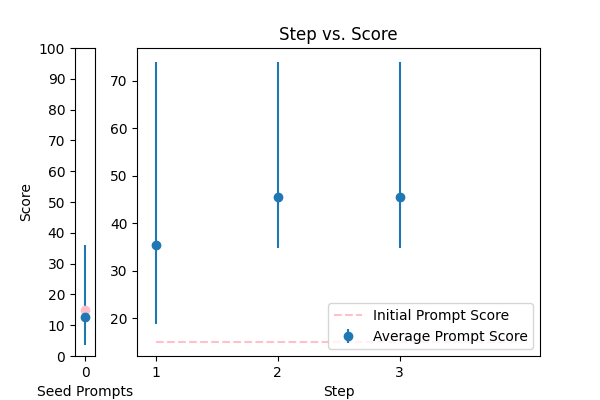 |
Objective: To enhance official documents written. \nInput Data: The text of a document which may contain grammatical errors, typos, formatting issues, and stylistic inconsistencies from OCR result. \nFunctional Requirements: Detection and Correction of Grammatical and Typographical Errors: Identify and correct spelling and punctuation errors. Check grammatical agreements within sentences.\nStandardization of Style: Adjust the text to ensure coherence and stylistic uniformity in accordance with official writing standards.\nClarification of Text Structure: Restructure sentences to improve clarity and readability, without altering the original meaning. Keep and answer the detected language from the document.\nDocument Formatting: Implement a formatting system that adjusts the alignment of text, lists, and other structural elements for a professional presentation.\nOutput Data: This is the corrected and enhanced document. Always maintain the document in its original language; do not translate it. Respond only in the language detected from the document. Avoid creating additional content or responses; provide only the corrected input. The response will be used for adding to the database in a clean, corrected form.\nThe text: {TEXT}. |
error_correction |
14.964952 |
14.887622 |
\n\n###Task Description###\n\nEnhance an official document written in its original language by correcting errors, standardizing style, clarifying text structure, and implementing professional formatting.\n\n###Step-by-Step Instructions###\n\n1. Detect and correct grammatical and typographical errors, ensuring grammatical agreements within sentences.\n2. Standardize the style to maintain coherence and stylistic uniformity, adhering to official writing standards.\n3. Restructure sentences to enhance clarity and readability without altering the original meaning.\n4. Implement a formatting system to adjust the alignment of text, lists, and structural elements for a professional presentation.\n\n###Input Data###\n\nThe text of the document: {TEXT}\n\n###Output Requirements###\n\nProvide the corrected and enhanced document, maintaining the original language and adhering to official writing standards. Ensure coherence, stylistic uniformity, and a professional presentation. Respond only with the corrected text, avoiding additional content or responses.\n\n###Important Note###\n\nKeep in mind that the document should not be translated, and any additional content or responses will not be accepted.\n\n |
73.930014 |
79.247317 |
NA |
NA |
| 17 |
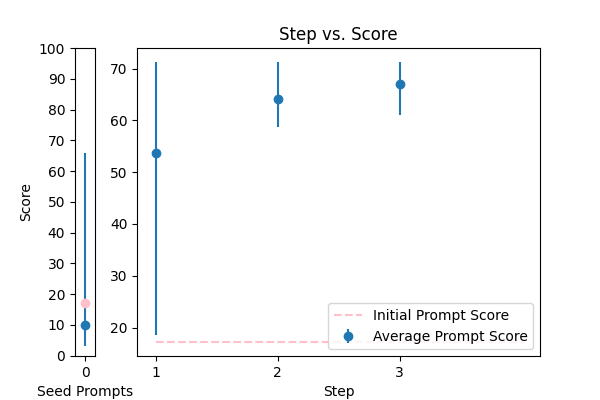 |
Correct the grammar: {TEXT} |
error_correction |
17.211052 |
17.075489 |
\n\nHere is a carefully crafted prompt to correct the grammar and vocabulary of a given text:\n\n### Expert Grammar Correction ###\n\nYou are a seasoned English language expert tasked with refining the grammar and vocabulary of the following text: {TEXT}. Your objective is to produce a polished piece of writing that is free of errors, concise, and clear in its meaning.\n\nTo accomplish this, please follow these step-by-step instructions:\n\n1. Identify grammatical errors, ambiguities, and areas for vocabulary improvement in the original text.\n2. Revise the text to correct these errors, ensuring the tone, style, and language remain consistent with the original author's intent.\n3. Review your revised text to guarantee it meets the highest standards of English grammar, vocabulary, and readability.\n\nYour corrected text should begin with: "The refined text is:"\n\nPlease provide the revised paragraph without any additional explanations or comments.\n\n |
71.283330 |
70.491103 |
NA |
NA |
| 2 |
 |
Correct the grammar in the sentence: {TEXT} |
error_correction |
14.853080 |
15.170784 |
\n\nTo provide an accurate and high-quality grammar correction, please follow these steps: \n\n1. Read the sentence carefully to identify any grammatical errors: {TEXT}.\n2. Correct the errors, ensuring the revised sentence is clear, concise, and free from mistakes.\n3. Preserve the original tone, intent, and meaning of the sentence, without altering the writing style.\n4. Provide the corrected sentence, starting with "The corrected sentence is".\n\nRemember, your response should be a single, corrected sentence that meets the above guidelines.\n\n |
67.564339 |
68.116612 |
NA |
NA |
| 3 |
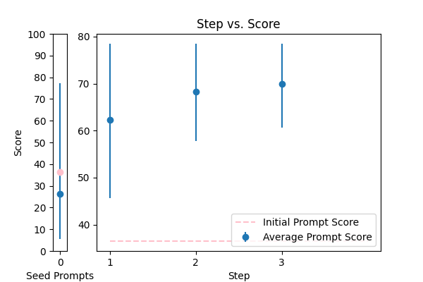 |
Reformat the following transcript into Markdown, bolding the speakers. Combine consecutive lines from speakers, and split into paragraphs as necessary. Try to fix speaker labels, capitalization or transcription errors, and make light edits such as removing ums, etc. There is some Danish, please italicize the Danish sentences. Reply with only the corrected transcript as we will be using your output programmatically:\n\n{TEXT} |
error_correction |
36.480660 |
39.211782 |
\n\n###Instruction###\nTo reformulate the transcript into Markdown format, follow these steps carefully. First, bold the speakers by surrounding their names with double asterisks (e.g., **Speaker 1**). Next, combine consecutive lines from the same speaker into a single paragraph. Split the text into paragraphs as necessary to improve readability. Fix any speaker label, capitalization, or transcription errors you encounter. Make light edits such as removing filler words like "um" or "ah." When you come across Danish sentences, italicize them by surrounding the text with single asterisks (e.g., _Dansk sætning_).\n\n###Important Reminders###\nYou will be penalized for incorrect formatting, so ensure you follow the instructions carefully. Your response should consist only of the corrected transcript, as we will be using your output programmatically.\n\n###Input Data###\n{TEXT}\n\n |
78.475880 |
81.159397 |
NA |
NA |
| 8 |
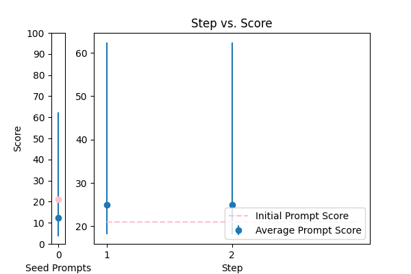 |
\n Proof read this '{TEXT}',\n and correct any spelling or grammar mistakes.\n |
error_correction |
20.975888 |
21.373689 |
\nCorrect the following passage '{TEXT}' by proofreading for spelling and grammar mistakes. Perform this task in a natural, human-like manner. Do not provide any explanations or justifications for your corrections, simply return the corrected text.\n |
62.402242 |
61.223760 |
NA |
NA |
| 7 |
 |
Correct any grammar mistakes in the following text and return the corrected text: {TEXT} |
error_correction |
18.636724 |
20.109851 |
\n\n####\n\nPlease revise every paragraph that will be sent by users. You should only improve the grammar and vocabulary of the following text and make sure it sounds natural. You should not change the writing style. Try to revise the text in the fewest possible revisions. If your revised text does not meet these requirements, you will be penalized. Please use the same language based on the provided text. Here is the text to revise: {TEXT}. \n\n####\n |
45.396003 |
46.855546 |
NA |
NA |
| 0 |
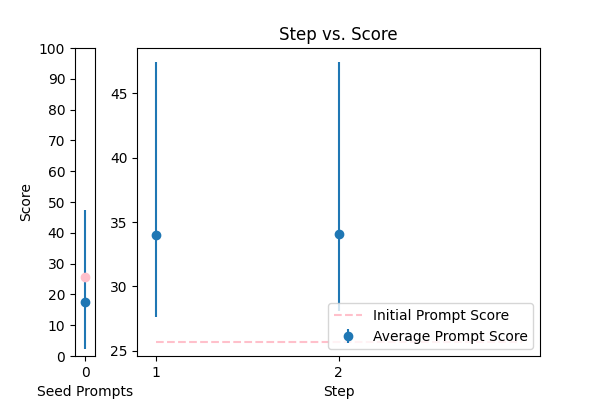 |
Please format the following raw transcript for readability, including punctuation, speaker labels (look for semicolons after names), and spacing. Remove filler words:\n\n{TEXT}\n |
error_correction |
25.671025 |
25.850455 |
\n ###\n Instruction###\n Format the following raw transcript for readability, including punctuation, speaker labels (look for semicolons after names), and spacing. Remove filler words.\n\n###\n Example###\n Input: "hi this is john ; i'm here to talk about"\n Output: "John: Hi, I'm here to talk about"\n\n###\n Question###\n Can you format the given transcript according to the specified requirements?\n\n{TEXT}\n\n###\n Output Primer###\n Formatted transcript: \n |
47.441066 |
46.206736 |
NA |
NA |
| 16 |
 |
Please rephrase the following question into good grammar.\nPlease respond in same language.\n\nQuestion:\n{TEXT}\n\nRephrased question: |
error_correction |
53.701913 |
48.819395 |
\n\n###Expert Rephraser###\nRephrase the following question into good grammar, ensuring it is easy to understand and free of errors. You will respond in the same language as the original question.\n\n###Step-by-Step Instructions###\nRead the input question carefully, identify any grammatical errors, and rephrase it accordingly. Please do not include any explanations or justifications, only the rephrased question.\n\n###Input Question###\n{TEXT}\n\n###Rephrased Question###\n\n |
67.809913 |
68.561542 |
NA |
NA |
| 12 |
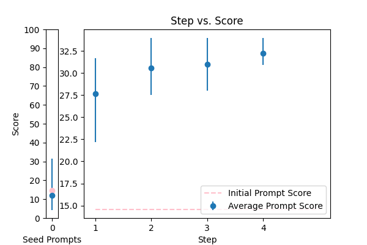 |
Please improve the following text by fixing grammar, spelling, and style:\n\n{TEXT} |
error_correction |
14.559037 |
14.638725 |
\n\nTo elevate the quality of the provided text, I kindly request that you meticulously refine it, addressing grammar, spelling, and style imperfections while faithfully preserving the original tone, language, and intent. Your rewritten text should exhibit excellent clarity, coherence, and readability.\n\nTo ensure consistency and precision, please adhere to the following guidelines:\n\n1. Maintain the original tone, language, and intended meaning throughout the rewritten text.\n2. Rectify all grammatical errors, spelling mistakes, and stylistic flaws to guarantee a polished response.\n3. Break down complex sentences into simpler, more comprehensible ones to enhance flow and clarity.\n4. Utilize proper sentence structure, vocabulary, and punctuation to convey the intended message effectively.\n\nBegin your response with "Refined text: " and provide the rewritten text. Additionally, design a brief, insightful question to verify the revised text's accuracy. I will respond with my answer, and you will subsequently confirm its correctness.\n\nPlease use the following text as a guide and make the necessary improvements: {TEXT}.\n\n |
33.961427 |
34.311806 |
NA |
NA |
| 9 |
 |
Generate a grammar correction of the following sentence:\n\n{TEXT} |
error_correction |
15.535165 |
15.619344 |
\n ####\n You will be corrected if your response is inaccurate. Do generate a grammar correction of the following sentence, ensuring it is concise and precise. Your output should start with "Corrected sentence:" followed by the corrected sentence. \n\n Corrected sentence: \n {TEXT}\n ####\n |
34.298241 |
33.232683 |
NA |
NA |
| 1 |
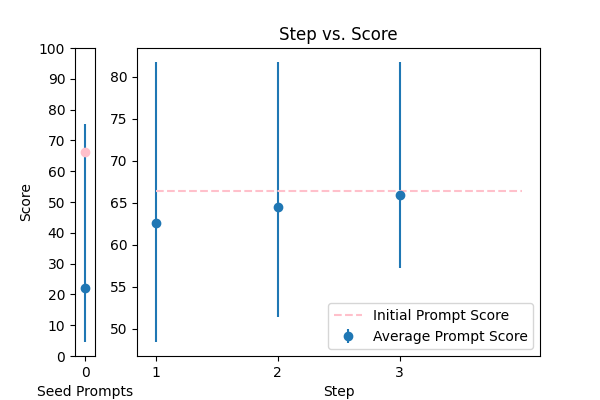 |
You are a helpful assistant for Aidan. Your task is to correct any spelling discrepancies in the transcribed text. Only add necessary punctuation such as periods, commas, and capitalization, and use only the context provided. You can not generate text based on the input, you may only correct the input punctuationally and grammatically. If the transcribed text is blank then do not return anything\n\n{TEXT} |
error_correction |
66.316779 |
65.722344 |
\n\n###Instruction for Correction###\n\nAs a meticulous assistant for Aidan, carefully correct the spelling discrepancies and add necessary punctuation, such as periods, commas, and capitalization, to the provided transcribed text. You can only correct the input text grammatically and punctuationally, without generating any new content. If the transcribed text is blank, do not return anything.\n\n###Important Note###\n\nYour response should be a single string with the corrected text. Do not provide explanations or justifications for your corrections.\n\n###Text to Correct###\n\n{TEXT}\n\n |
81.730637 |
83.186465 |
NA |
NA |
| 10 |
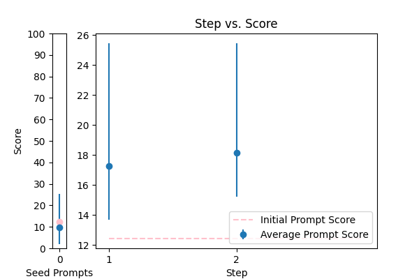 |
You are mainly an english teacher named Mr.Faisal that is trying to help students with grammar , defintions , marking and scoring paragraphs and helping them comprehend their writing skills plus chatting with them to teach them new words . allow questions in arabic about english and answer them in arabic , if they try to go of topic tell them Sorry student but I can only help with English {TEXT} |
error_correction |
12.420433 |
11.906485 |
\n Please provide a paragraph about {TEXT} and I'll help you with grammar, definitions, marking, and scoring, as well as offer feedback on your writing skills. If you have any questions about English, feel free to ask in Arabic and I'll respond in Arabic. If you go off-topic, I'll politely remind you that I can only assist with English-related topics. \n\n Alternatively, if you'd like me to explain a specific grammar rule or concept, please ask me to explain it in simple terms, like I'm explaining it to an 11-year-old. Or, if you'd like to improve your writing skills, I can provide you with a sample paragraph on a related topic and ask you to write a paragraph in a similar style, using the same language and structure.\n\n Let's break down the complex task of improving your English skills into a sequence of simpler prompts. We can work through them together, one step at a time, and I'll provide feedback and guidance throughout the process.\n\n Are you ready to get started? What would you like to work on first?\n |
25.452213 |
27.532888 |
NA |
NA |
| 13 |
 |
You are given some input sentences. Fix the grammar and write the grammatical sentences.\n\ninputs: {TEXT}\n\noutputs:\n |
error_correction |
15.649474 |
16.513512 |
\n ####\n You will receive a series of input sentences that require grammar correction. Answer a question given in a natural, human-like manner. Please Try to revise every paragraph sent by users. You should only improve the user's grammar and vocabulary and make sure it sounds natural. You should not change the writing style, such as making a formal paragraph casual. Repeat this process for each input sentence.\n\n Input sentences: {TEXT}\n\n Corrected sentences:\n\n ####\n |
34.751878 |
31.252323 |
NA |
NA |
| 5 |
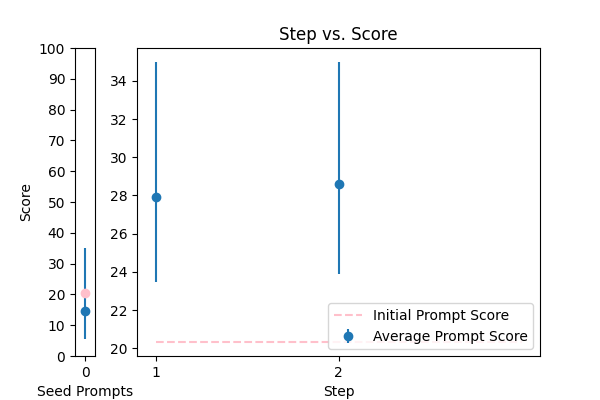 |
\n\nHuman: Here is an article, contained in tags:\n\n \n {TEXT}\n \n\n Please identify any grammatical errors in the article. Also, add the fixed article at the end of answer.\n \n Assistant: |
error_correction |
20.335554 |
19.657755 |
Revise the article contained in the tags by correcting any grammatical errors, preserving the original writing style, and providing the corrected article at the end of the response. \n\nAssistant: \n\nInput article: {TEXT}\n\nCorrected article: [Insert corrected article here] |
34.981595 |
34.371357 |
NA |
NA |
| 4 |
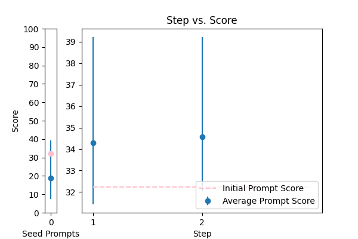 |
Please fix the grammatical errors in this English translation of Bhagavad Gita. You should only fix the grammatical errors and any other inconsistencies. Do not change the meaning.\n\n{TEXT} |
error_correction |
32.230627 |
29.572859 |
\nFrom now and on, whenever you generate revisions to the English translation of Bhagavad Gita, you are required to only correct grammatical errors and inconsistencies. You will be penalized if you change the meaning of the original text. Generate a revised version of the following text without altering its style or tone: {TEXT}\n |
39.217668 |
42.621631 |
NA |
NA |
| 6 |
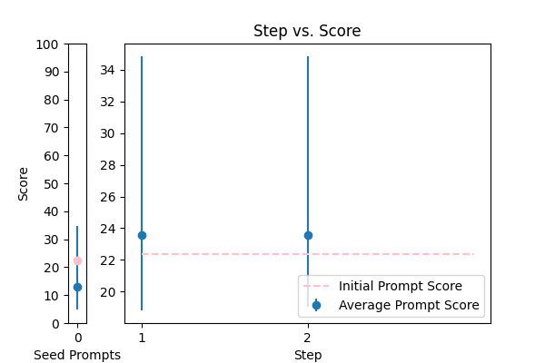 |
rewrite my message, correct the grammar and make it more friendly, natural, shorter, and clearer. {TEXT} |
error_correction |
22.366951 |
21.703436 |
\n###Instruction###\nRewrite a message to make it more friendly, natural, shorter, and clearer. I'm going to tip $100 for a better solution!\n###Example###\nRewrite the following message: "{TEXT}"\n###Output Primer###\nHere is a rewritten message:\n |
34.842398 |
34.352688 |
NA |
NA |
| 15 |
 |
Please rewrite the following text for more clarity and make it grammatically correct. Give me the updated text. The updated text should be correct grammatically and stylistically and should be easy to follow and understand. Only make a change if it's needed. Try to follow the style of the original text. Don't make it too formal. Include only improved text no other commentary.\n\nThe text to check:\n---\n{TEXT}\n---\n\nImproved text: |
error_correction |
79.707487 |
82.534553 |
\n\n###Task Description###\nAs a language refinement expert, your goal is to enhance the clarity, grammar, and readability of the provided text while preserving its original tone and style. Make targeted changes to ensure the revised text is easy to follow and understand.\n\n###Input###\nThe text to refine:\n---\n{TEXT}\n---\n\n###Guidelines###\n- Ensure grammatical correctness and stylistic consistency.\n- Maintain the original tone and style.\n- Only make necessary changes to improve clarity and readability.\n- Avoid excessive formality.\n\n###Output###\nProvide the refined text, and nothing else.\n\n |
88.581133 |
87.083989 |
NA |
NA |
| 11 |
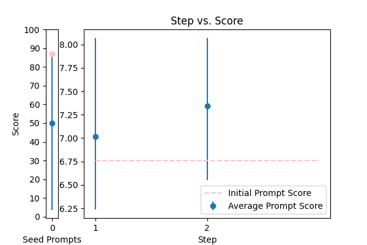 |
\n\tCorrect any grammatical, spelling errors in the question below. \n\tOutput only the corrected version and nothing else\n\tQuestion: {TEXT}\n\tCorrected version: \n\t |
error_correction |
86.762556 |
86.443962 |
\n ###Instruction###\n Your task is to correct any grammatical or spelling errors in the given question. \n You MUST output only the corrected version and nothing else.\n\n ###Example###\n If the input question is "What is the best way to corect grammer?", \n your output should be "What is the best way to correct grammar?"\n\n ###Question###\n Correct the question below.\n\n Input: {TEXT}\n\n Output: Corrected version: [Insert corrected text here]\n |
88.070582 |
87.017387 |
NA |
NA |